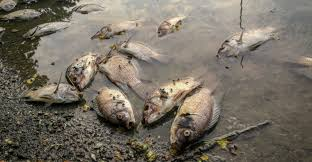
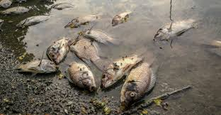

| Inicio | Causas | Consecuencias | Soluciones |
La contaminación del agua aumenta los costos de tratamiento y afecta sectores como la pesca, el turismo y la agricultura. Al romperse la cadena alimenticia acuática, se alteran los ecosistemas, provocando la desaparición de especies y afectando también a animales que dependen del agu Muchas especies de peces, plantas acuáticas y microorganismos mueren debido a sustancias tóxicas como químicos, plásticos o desechos industriales. La contaminación del agua tiene efectos graves como la muerte de especies acuáticas, enfermedades en humanos (como cólera), y la escasez de agua potable en muchas regiones del mundo.
 
